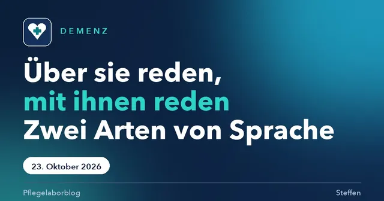
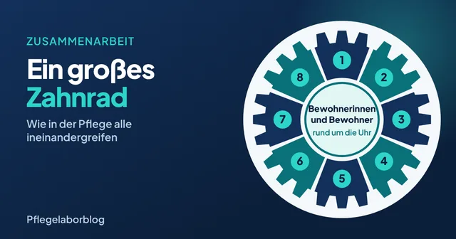
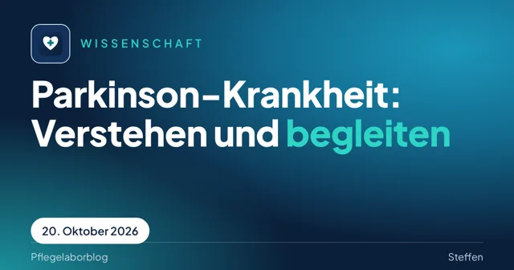
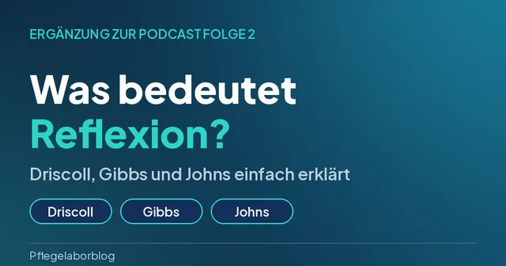
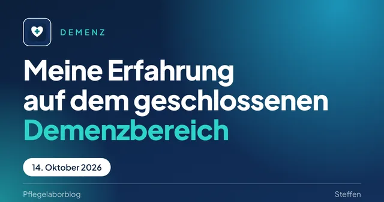
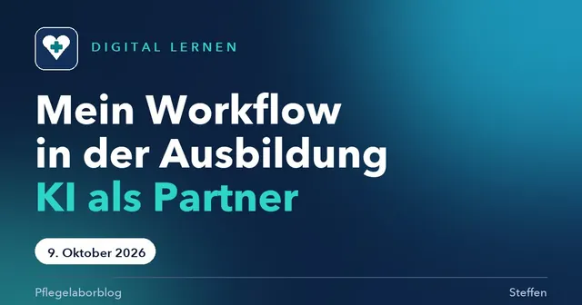
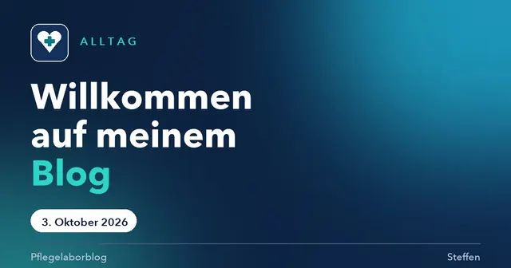

Blog
Beiträge
Erfahrungen aus der Ausbildung, Lerntipps und Fachthemen. Sortiere nach Rubrik.

DemenzÜber sie reden, mit ihnen reden: Zwei Arten von Sprache in der Demenzpflege
Wie wir über Menschen mit Demenz sprechen und wie wir mit ihnen sprechen, sind zwei Fragen. Was Sprachleitfaden und Arbeitshilfe dazu sagen.

BerufsbildEin großes Zahnrad: Wie in der Pflege alle zusammenarbeiten
Von Helfern bis Leitung, von Ärzten bis Sanitätshaus, Physio und Krankenfahrten: Ein Dank an alle, die für die Bewohner mitwirken.

WissenschaftParkinson-Krankheit: Wie sie entsteht, wie sie behandelt wird und wie Menschen damit leben
Was die Parkinson-Krankheit ist, wie sie entsteht, wie sie behandelt wird und wie Menschen damit leben, nach der S2k-Leitlinie.

WissenschaftErgänzung zur Podcast Folge 2: Was bedeutet Reflexion?
Die Reflexionsmodelle von Driscoll, Gibbs und Johns einfach erklärt, mit je einem ausgedachten Beispiel aus dem Pflegealltag.

DemenzDemenz in der Pflege: Meine Erfahrung auf dem geschlossenen Bereich
Drei Jahre auf geschlossenen Demenzbereichen: Verhalten als Symptom, Validieren statt Korrigieren und was mich geprägt hat.
PolitikPflegeneuordnungsgesetz (PNOG): Was sich für Pflegeheime ändern soll
Das Kabinett hat das Pflegeneuordnungsgesetz beschlossen. Was sich für Pflegeheime, Eigenanteile und Pflegegrade ändern soll, und meine Meinung dazu.
AlltagGespräche im Pflegealltag: Kleine Worte, große Wirkung
Was Bewohner sich erzählen, was uns berührt und was ein paar freundliche Worte bewirken können.
WissenschaftDekubitus: Wie Druckgeschwüre entstehen und wie wir sie in der Pflege verhindern
Was ein Dekubitus ist, wie die Kategorien 1 bis 4 aussehen und was Expertenstandard und Leitlinie zur Vorbeugung empfehlen.

Digital lernenMein Workflow in der Ausbildung: KI als Organisationspartner
Vom Arbeitsblatt zum Lernzettel: Wie ich scanne, benenne und warum die KI nie meine Aufgaben löst.
AlltagWarum ich Pflegefachmann werde
Mein Umweg in die Pflege, was mich an der Arbeit mit Menschen mit Demenz bewegt und was ich vorhabe.
AlltagDer Umgang mit dem Tod in der Pflege
Wenn ein Bewohner verstirbt: Beziehung, Arbeitsmodus und warum Trauern keine Schwäche ist.
SchuleSo lernen wir in der Pflegeausbildung
Fallbeispiele, selbst lesen, Aufgaben und gemeinsam besprechen.
Digital lernenWie ich meine Ausbildung digital ordne
Warum ich nach CE Einheiten sortiere und nicht nach Lehrern.

AlltagWillkommen auf meinem Blog
Warum ich diesen Blog schreibe und was dich hier erwartet.